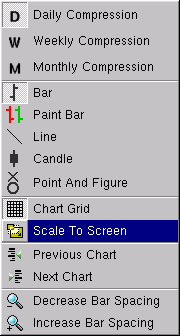

The grid is an array of vertical and horizontal lines drawn in the background of all charts. The vertical lines are placed on the first bar of the month or year depending on the current chart compression. The horizontal lines are placed at every scale interval. The grid can be turned on or off.

Scale to screen changes the current chart scaling from the entire range of bars loaded to just the bars currently visible on the chart. The scale to screen can be turned on or off.